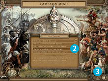

第一章 了解游戏模式
1.2 單人遊戲

在主菜单选择单人游戏进入后，这里会有战役、单人任务、随机地图和竞技战役（征服美洲-反击 1.50版独有）几种玩法。点击你想要玩的任意一种模式，或点击返回，可以返回主菜单。
1.2.1 战役
战役部分是根据真实的历史创建的连续性任务。玩家的目标是根据历史背景故事完成该战役中所有的任务。在原版 1.46 版和反击 1.50 版中各有 8 个战役。建议新玩家可以从第一个战役——哥伦布的航海开始，因为这个系列任务可以算是一个新手的入门教程，在任务过程中，提示框会给出很多指导。
战役板块操作

① 选择或输入一个玩家姓名，然后点击“确定”即可；
② 这里显示所有战役的名称，点击选择一个想要玩的战役；
③ 点击“开始游戏”图标进入该战役关卡列表；
④ 这里列出了这个战役中每个关卡的名称，当你成功完成一个关卡后，下一个关卡才会显示；
⑤ 查看关卡的描述以及历史地图；
⑥ 选择关卡的难易程度，从“简单”到“不可能”；
⑦ 如果要开始一个关卡，选中这个关卡，点击“开始游戏”图标即可。
征服美洲 1.46 原版战役
哥伦布的航海 (1492 - 1502)，西班牙
克里斯托弗·哥伦布到达新世界并建立了第一个定居点。这是一个教程一样的战役，教你如何建造建筑，获取资源和领导军队。
皮薩羅的入侵 (1532 - 1544)，西班牙
皮萨罗征服印加帝国。
七年战争 (1756 - 1763)，英国
重现英法在北美殖民地的战争。
七年战争 (1756 - 1763)，法国
从法国的角度来重现北美新世界的土地征战。
特库姆塞的暴動 (1809 - 1813)，美国原住民
特库姆塞试图将北美原住民的部落联合起来，建立一个反抗美国殖民者的联盟。
特库姆塞的暴動 (1809 - 1813)，美国
美国殖民地镇压特库姆塞的战争。
独立战争 (1775 - 1783)，英国
从欧洲殖民者的角度讲述美国殖民地反抗的故事。
独立战争 (1775 - 1783)，美国
从起义到独立，建立北美第一个独立的国家。
征服美洲 反击 1.50版战役
黄金国 (1531 - 1541)，德意志
德意志的探险家在南美洲寻找传说中的黄金国，他们探询未知的土地，与凶猛的原住民战斗，都是为了追求黄金。
科尔特兹的远征 (1517 - 1546)，西班牙
由着名的征服者科尔特兹领导的尤卡坦探险队，远征阿兹台克文明并摧毁了他们的首都特诺奇蒂特兰城。
征服尤卡坦 (1517 - 1546)，玛雅
讲述了部分玛雅文明在尤卡坦半岛抵抗西班牙侵略者的故事。
阿兹特克的暴乱 (1517 - 1546)，阿兹特克
阿兹特克人在特诺奇蒂特兰反抗西班牙侵略者科尔特兹的探险队。
庞蒂亚克的暴動 (1760-1767)，美国原住民
伟大的首领庞蒂亚克企图团结所有原住民部落反抗英国殖民者。
英国的反擊 (1760-1767)，英国
英国殖民者镇压庞蒂亚克的起义。
俄罗斯的探险 (1784-1804)，俄罗斯
俄罗斯殖民者跨过白令海峡，入侵特林吉特人的阿拉斯加土地。
冰封之地 (1784-1804)，阿拉斯加原住民
海达人反抗俄罗斯对他们的土地的侵略。
1.2.2 单人任务
单人任务不像战役中每个战役有不同的关卡，每一个单人任务都是独立的，玩家可以开始任意一个。每个任务都有不同的游戏模式和胜利目标，包括海军围攻、发展殖民地或攻击原住民的寺庙。建议新手从第一个任务开始，和战役模式一样，第一个单人任务是一个引导新玩家了解熟悉游戏操作的“指南”。
单人任务板块操作
① 这里显示所有单人任务的名称，点击选择一个想要玩的战役；
② 查看任务的描述以及历史地图；
③ 选择关卡的难易程度，从“简单”到“不可能”；
④ 如果要开始一个关卡，选中这个关卡，点击“开始游戏”图标即可。
征服美洲 1.46 原版单人任务
白色神的归来
扮演西班牙征服史弗朗西斯科·德·蒙特霍，去征服尤卡坦半岛的玛雅城邦。（教程任务）
无敌舰队
指挥西班牙军队，消灭敌人的战略优势。
伏击
领导法国军队，阻止英军的前进。注意使用战术。
玛雅的复仇
西班牙征服者要抢夺玛雅人的土地，带领玛雅人进行抵抗。
圣胡安河
在新的世界刚刚落地，你的任务是为西班牙探索新的土地。你要面对玛雅、印加人和阿兹特克人，寻找到黄金。
美国土著的起义
特库姆塞已经联合了几十个部落反抗白人。指挥美国军队，击败各个部落。
法国军队
英国的城市影响了你的战略，攻击这座城市，给英国人展示一下法国的力量。
打猎
野牛的营养价值很高，你要寻找并猎取他们。南部的部落和英国人随时可能攻击你。
征服美洲 反击 1.50版单人任务
引导
扮演西班牙征服史弗朗西斯科·德·蒙特霍，去征服尤卡坦半岛的玛雅城邦。（教程任务）
新酋长
作为一个苏族部落有抱负的领导者，你会将一个珍贵的遗迹从殖民者手里抢夺回来。
征服阿拉斯加
俄罗斯人来到阿拉斯加，他们没有盟友，并且需要面对本地的特林吉特人。
葡萄牙语还是印加语
选择加入印加人或葡萄牙人，为伯南布科的控制权而战。消灭敌人的建筑。
海上封锁
我們的英國海軍港口受到法國艦隊的攻擊。 他們的基地和我們的基地都位於半島上。
独立战争
美國需要你。代表美國反抗英國的統治。目標是擊敗英國軍隊並解放你的人民。
奴隶贸易
带领想要寻找财富的西班牙探险者去美洲原住民的地盘搜刮奴隶。
法国的进攻
作为英国将领，你必须抵制法国和印加人的攻击。领导你的部队，摧毁法国建筑。
荷兰的权威
你在荷兰与西班牙争夺霸权的战争前线。帮助印加人，他们是一个强大的盟友。
美德沙漠战争
你领导德意志军队，将于美军在沙漠中展开厮杀。
祖先的土地
海达人已经准备好对抗俄罗斯侵略者。不要忘记海上的进攻。
1.2.3 随机地图
如果想要自定义一局游戏，可以通过随机地图模式来达到。你可以设置几乎所有的原始参数（包括国家、地图类型、地图大小、难易程度、初始资源等等），来开始一场你喜欢的游戏。随机地图和战役、单人任务不同，他没有故事情节，你唯一的目标就是打败所有的对手。如果地图选择随机，那么每次进入地图总有不同。有了随机地图模式，理论上可以拥有无限数量的地图。
随机地图模式操作
① 选择国家参数，你的名字会出现在第一行，第一行右边是你的国家、颜色、组队选项；
② 为电脑玩家选择国家、颜色、组队、难度等参数；
③ 选择游戏开始的参数，包括地图类型、地图大小、难易程度、初始资源等等。滚动右边的滚动条可以查看完整选项；
④ 这里会显示这个地图可能的形式；
⑤ 一切都选择好了之后，要开始这个随机游戏，点击“开始游戏”图标即可。
下面将详细介绍随机地图中的每一个初始参数。
Designed/设计好的
选择这里，可以查看并选择玩家自己设计制作的地图，选择一个设计好的的地图（游戏参数已经通过地图编辑设定好了），在左边的玩家选项里，选择地图上相应的玩家颜色，即可开始。
Random/随机模式
这是最常用的随机地图模式，选择这里，就可以设定几乎所有参数。
Saved/保存的地图
这里可以读取游戏中保存的进度，选择一个进度，在左边的玩家选项里，选择地图上相应的玩家颜色，即可开始。
Landscape Type/地形类型
该选项可以决定地图地形的陆地和水面比率。这将会影响到后来的战斗模式。
Land/陆地 —— 地图主要以陆地为主，可能会有几个小型水域
Mediterranean/地中海 —— 在中间有一大片水域的陆地地图
Peninsulas/半岛 —— 大片和水域边缘临近的陆地
Islands/岛屿 —— 水域里互相独立的几块岛屿
Continents/大陆群 —— 几块大型的被水域环绕的陆地
Continent/大陆 —— 一整块被水域环绕的陆地
Random/随机 —— 从以上几种地形类型中随机决定
Ground Type/地貌类型
该选项可以调整地面的自然环境，这将会决定战术策略。例如大片旷野作战的对抗性很强，而高远地区适合阵地战。
Plain/平原 —— 大片平坦的陆地，几乎没有丘陵或山脉
Low Mountains/低矮山脉 —— 大片陆地中有低矮的山
High Mountains/高达山脉 —— 大片陆地中有高大的山
Highlands/高地 —— 比临近的陆地搞的地区，而且有很多丘陵或山
Plateaus/高原 —— 一块高起的陆地，有高低不同的地区
Random/随机 —— 从以上几种地貌类型中随机决定
Climatic Zone/气候区域
该选项决定了游戏地图中的环境所处的气候带。不同的气候区域反应了美洲陆地不同的环境，可以看到安第斯的沙漠，热带尤卡坦的雨林，美国大平原等不同的气候。不同的气候区域中，地图中的树木数量、中立部落和野生动物也会有一些差异。
North/北部 —— 覆盖大片森林的寒冷区域
Moderate/温和 —— 有混合森林的中等温和区域
Tropical/热带 —— 有雨林和灌木丛的温暖区域
Desert/沙漠 —— 到处都是沙子的炎热旷野
Random/随机 —— 从以上几种气候区域中随机决定
Initial Resource/初始资源
该选项可以用来设定游戏开始时，每个游戏玩家的初始资源数量。初始资源数量直接决定游戏发展速度。
Normal/标准 —— 发展所必须的少量资源，各项资源均数量为1000
Rich/富有 —— 有较多的资源，各项资源数量均为10000
Thousands/数千 —— 快速发展所需要，各项资源数量均为100000
Millsions/百万 —— 有大量的资源，各项资源数量均为1000000
Random/随机 —— 从以上几种初始资源中随机决定
Minerals/矿产数量
该选项可以用来设定地图上的矿产数量。若地图上矿产匮乏，就会导致真多矿产的斗争。控制大多数矿产，也就意味着控制了多数资源。
Lean/贫乏 —— 每个玩家区域内黄金、石头、铁和煤矿各有1个
Medium/中等 —— 每个玩家区域内黄金、石头、铁和煤矿各有2个
Rich/富有 —— 每个玩家区域内黄金、石头、铁和煤矿各有3个
Random/随机 —— 从以上几种矿产数量中随机决定
在随机游戏中，地图中的矿产一般产生在玩家农民出生地周边；其中金矿、石头和铁一般在附近，煤矿一般稍微远一点，需要玩家去侦查才能发现。
Map Size/地图尺寸
该选项可以设定地图的大小，大型地图会给玩家更多的活动空间。战役与单人任务中的地图大小都是“一般”模式的。但是玩家在行军过程中也需要花费更多时间。在电脑硬件上，大型地图会占用更多的电脑资源。
Normal/标准 —— 标准尺寸的地图
Large/大型(2×2) —— 标准尺寸地图的4倍大小
Huge/巨大(4×4) —— 标准尺寸地图的16倍大小
Start Options/起始选项
该选项可以设定每个玩家初始时的农民和部队数量。
Default/默认 —— 开始只有一些农民，没有军队
Army/军队 —— 开始有一些部队和一群农民
Big Army/大部队 —— 开始有大量部队和一群农民
Extensive Army/超大部队 —— 开始有很多的部队和一群农民
Army of Peasants/农民军 —— 开始有很多农民
Fog of War/战争迷雾
该选项可以设定这场随机游戏中玩家是否可以看见全部地图，抑或只能看到自己和盟友部队周边的地区。
Default/默认 —— 地图默认开启战争迷雾
No Fog of War/无战争迷雾 —— 地图不开启战争迷雾
Cannons/加农炮
该选项可以决定这场随机游戏中玩家是否可以建造加农炮。
Default/默认 —— 默认运行建造标准的加农炮
No Cannons/无加农炮 —— 所有玩家都不能建造加农炮
Expensive Cannons/昂贵的加农炮 —— 加农炮比一般情况要贵很多
Peace Time/和平时间
该选项决定了游戏起始内多久时间内无法进行进攻敌人。和平时间内，若跨界进攻别人，则进攻单位会消亡，也不能跨界建造建筑。
5 mins/5分钟 —— 和平时间5分钟
10 mins/10分钟 —— 和平时间10分钟
20 mins/20分钟 —— 和平时间20分钟
30 mins/30分钟 —— 和平时间30分钟
45 mins/45分钟 —— 和平时间45分钟
60 mins/60分钟 —— 和平时间60分钟
1.5 hrs/1.5小时 —— 和平时间1.5小时
2 hrs/2小时 —— 和平时间2小时
3 hrs/3小时 —— 和平时间3小时
4 hrs/4小时 —— 和平时间4小时
Auto Save/自动保存
通过这个选项，可以设定游戏过程中每隔若干分钟自动保存一次，自动保存的游戏以后可以再次读取。
Every minute/每1分钟 —— 每1分钟自动保存一次
Every 2 minute/每2分钟 —— 每2分钟自动保存一次
Every 4 minute/每4分钟 —— 每4分钟自动保存一次
Every 6 minute/每6分钟 —— 每6分钟自动保存一次
Every 8 minute/每8分钟 —— 每8分钟自动保存一次
Every 10 minute/每10分钟 —— 每10分钟自动保存一次
Never/从不保存 —— 不开启自动保存
Victory/胜利条件
这个选项可以设置如何判定玩家是否胜利。有两种胜利条件，全部摧毁（摧毁或占领敌军所有的单位和建筑物）和得分（在指定时间内得分最高的玩家胜利）。
Annihilation/全部摧毁 —— 摧毁或占领敌军所有的单位和建筑物
Score/得分 —— 可以设定在30分钟、45分钟、1小时、1.5小时、2小时、4小时和8小时时间内得分最
高的玩家胜利
1.2.4 竞技战役
竞技战役是 征服美洲-反击 1.50 独有的单人战斗模式。可以提升玩家的军事战略水平。竞技战役一共有10个关卡，每完成一个关卡，才会解锁后一个。
有两种方法可以开始竞技战役游戏，如果你想直接开始最新的关卡，可以点击“快速开始”按钮，如果你想了解每一个竞技战役，可以点击“竞技战役菜单”按钮。
竞技战役战役板块
① 全球玩家在竞技战役板块的得分前7位排行榜以及玩家的得分情况；
② “快速开始”按钮，点击直接开始最新的关卡；
③ 点击“竞技战役菜单”按钮可以进入所有的竞技战役清单页面；
④ 这里列出了竞技战役关卡的名称，当你成功完成一个关卡后，下一个关卡才会显示；
⑤ 选择竞技战役的难易程度，从“简单”到“不可能”；
⑥ 查看竞技战役的描述以及地图；
⑦ 如果要开始一个竞技战役，选中这个战役，点击“开始游戏”图标即可；
⑧ 三个褐色框分别显示玩家在该战役中的得分情况与最高分，这3个得分点分别是难度、策略和总计；
⑨ “重试”按钮可以重新进行这场竞技战役。
当竞技战役开始的时候，你有30秒的时间查看双方的兵力、升级军事单位的属性和进行预先指派操作，这些信息和操作界面会在右上角显示出来，如右图所示。
玩家可以点击操作框内的图标进行查看和操作，如果操作完成，可以点击“READY”按钮开始这场战役。
在战役结束后，会显示一个带有分数的窗口，玩家可以选择重新开始游戏或回到竞技战役菜单页面。
小提示：
单人游戏和多人游戏中都含有竞技战役模式，关于多人游戏中的竞技战役模式，请参考
1.3.3 竞技战役 章节。